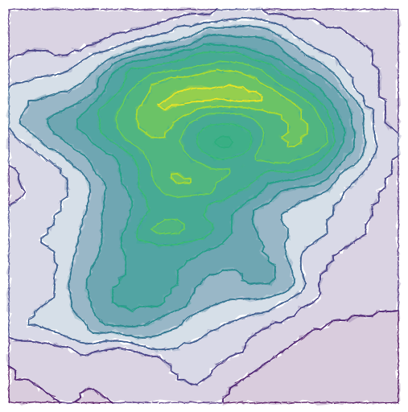

vignettes/Volcano.Rmd
Volcano.RmdLet’s import a volcano in Excalidraw; since there’s no support for raster graphics, we’ll use the {isobands} package to create polygonal contour lines.
The {isobands} package takes a matrix of elevations and returns a number of contour lines at different heights. Adapting the documentation’s example with the R volcano dataset,
library(minixcali)
library(isoband)
m <- volcano
b <- isobands((1:ncol(m))/(ncol(m)+1), (nrow(m):1)/(nrow(m)+1), m, 10*(9:19), 10*(10:20))
str(b, list.len = 3)## List of 11
## $ 90:100 :List of 3
## ..$ x : num [1:140] 0.984 0.968 0.952 0.935 0.919 ...
## ..$ y : num [1:140] 0.0114 0.0114 0.0114 0.0114 0.0114 ...
## ..$ id: int [1:140] 1 1 1 1 1 1 1 1 1 1 ...
## $ 100:110:List of 3
## ..$ x : num [1:466] 0.548 0.548 0.532 0.516 0.5 ...
## ..$ y : num [1:466] 0.0114 0.0114 0.0114 0.0114 0.0114 ...
## ..$ id: int [1:466] 1 1 1 1 1 1 1 1 1 1 ...
## $ 110:120:List of 3
## ..$ x : num [1:560] 0.468 0.468 0.452 0.435 0.435 ...
## ..$ y : num [1:560] 0.0568 0.0568 0.0682 0.0682 0.0682 ...
## ..$ id: int [1:560] 1 1 1 1 1 1 1 1 1 1 ...
## [list output truncated]
## - attr(*, "class")= chr [1:2] "isobands" "iso"We have a number of polygons with (x,y) coordinates to pass to xkd_draw() elements, but note that some of these polygons are not simply connected: this will be a problem as Excalidraw will join the pieces that should be disjoint. We’ll therefore break down each path into separate groups using the id attribute returned by isobands().
## List of 3
## $ 1:List of 3
## ..$ x : num [1:140] 0.984 0.968 0.952 0.935 0.919 ...
## ..$ y : num [1:140] 0.0114 0.0114 0.0114 0.0114 0.0114 ...
## ..$ id: int [1:140] 1 1 1 1 1 1 1 1 1 1 ...
## $ 2: Named list()
## $ 3: Named list()We now proceed to build the Excalidraw scene one subpath at a time, colouring the levels with both fill and colour.
d <- Excali_doc()
library(scales)
fills <- scales::viridis_pal(alpha = 0.2)(length(b))
cols <- scales::viridis_pal(alpha = 1)(length(b))
scale <- 500
for(ii in seq_along(b)) {
fill <- fills[ii]
col <- cols[ii]
l <- b[[ii]]
spl <- split(data.frame(x = l$x, y = -l$y), l$id)
for (s in spl) {
r_x <- range(s$x)
r_y <- range(s$y)
m <- scale * cbind(s$x - r_x[1], s$y - r_y[1])
shape <- xkd_draw(
x = scale * r_x[1],
y = scale * r_y[1],
width = scale * diff(r_x),
height = scale * diff(r_y),
strokeWidth = 0.8,
roughness = 2L,
strokeSharpness = "sharp",
groupIds = list("levelplot",
paste0('level-', ii)),
fillStyle = "solid",
strokeColor = col,
backgroundColor = fill,
points = m
)
d$add(shape)
}
}
d$export('volcano.json')You can see this drawing at: https://excalidraw.com/#json=6037869848166400,542JGip6v1DtWfHgYEvG5w
